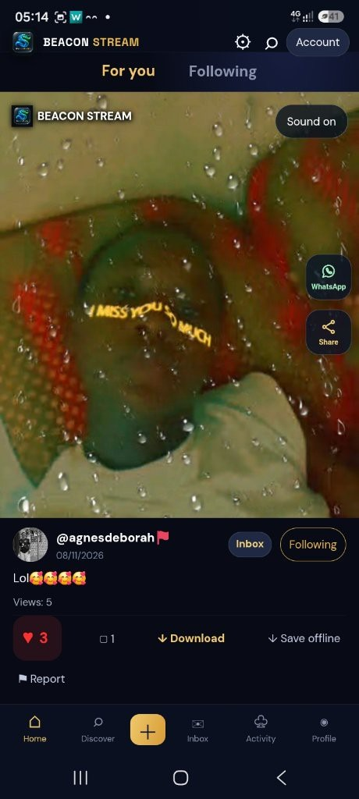

01 / DISCOVER
Find your next favourite.
Browse the latest public videos, search captions and follow creators to see their posts in your following feed.
Someone shared a Beacon video with you. Download Beacon to join the community. Automatic video-link opening is not available in this preview yet.
Share something worth watching. Discover creators, post your videos and connect through a community built around what you share.
v1.9.1 preview · 7.96 MB · Android 6+
Direct APK download. Not yet on Google Play. Installation needs your approval.

Browse the latest public videos, search captions and follow creators to see their posts in your following feed.
Choose a video, add a caption and publish it to the shared feed. Share a moment, a story or something worth learning.
Like a video, leave a kind comment or follow someone whose work you enjoy. Use the report option to flag concerning content.
Beacon Stream is in early access. Features and availability can change as the project grows. These information pages are separate from the Android app and do not change its interface.
Read the privacy policy ↗One website to share with friends. No need to forward the APK in a chat.
Tap Download for Android. Your browser downloads the Beacon Stream APK.
Open the downloaded APK. Android may ask you to allow installs from your browser. Only approve if you trust the source. Do not bypass a harmful-app detection.
Open Beacon, sign in and explore. If updating an existing preview, install over it. Do not uninstall just to force a rejected update.
Android preview · 7.96 MB · Android 6 or later
This is an early test build, not a Google Play release. Browser and Android security prompts may still appear. iPhone installation is not supported.
7394e3b73ed6f99e7377f41cdcc531da015ab4156978e72b5eba2e56b1e49147Not yet. This website offers the Android preview APK directly. Android asks you to approve installation.
Yes. Share this website so friends can find the preview and read about Beacon before downloading. Security warnings cannot be guaranteed to disappear just because the download comes from a website.
Not in this preview yet. App-link opening and routing to a particular video are still to be connected and tested. This website does not play videos or guarantee that public video files are protected.
Email mulopamuhammad66@gmail.com. For account or content removal, see the privacy and deletion instructions. Never send passwords or sign-in codes.
Send feedback, ask a question or get help with your account.